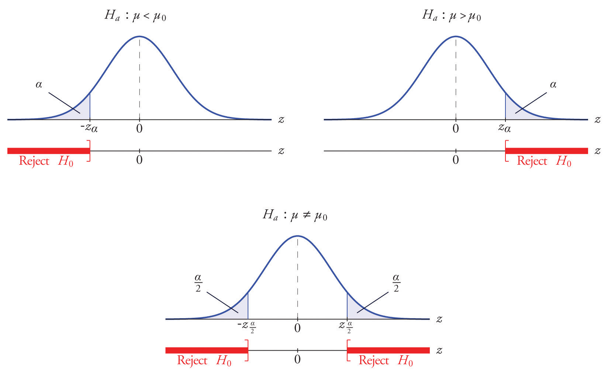

Una prueba de hipótesis es un método estadístico que responde a una pregunta particular de forma Sí o No.
Ejemplo: ¿El GPA promedio de estudiantes universitarios es menor a 2.8?
Ejemplo: ¿El ingreso promedio de los hombres en Puerto Rico es más alto que el ingreso promedio de las mujeres?
Una prueba de hipótesis generalmente se expresa en forma de dos enunciados en lugar de una pregunta. Estas declaraciones se llaman la hipótesis nula (\(H_0\)) y la hipótesis alternativa o de investigación (\(H_a\))
\(H_0\) y \(H_a\) corresponden a dos enunciados en lugar de hacer una sola pregunta.
Ejemplos:
\(H_0\): El GPA promedio de los estudiantes subgraduado del Colegio es igual a 2.8
\(H_a\): El GPA promedio de los estudiantes subgraduados del Colegio es mayor a 2.8
Otra forma de escribir estas hipótesis es mediante un parámetro poblacional, que en este caso el promedio poblacional \(\mu\).
\(H_0\): \(\mu = 2.8\)
\(H_a\): \(\mu > 2.8\)
\(H_0\): El ingreso mensual promedio es igual en hombres y en mujeres.
\(H_a\): El ingreso mensual promedio es mayor en hombres que en mujeres.
Para este caso el parámetro es el ingreso promedio de hombres y mujeres, es decir, \(\mu_M\) y \(\mu_F\) respectivamente. entonces
\(H_0\): \(\mu_M = \mu_F\)
\(H_a\): \(\mu_M > \mu_F\)
Uno de los errores más comunes al plantear las hipótesis para la media poblacional \(\mu\) es usar la media muestra \(\bar{X}\).
Podemos organizar la metodología para realizar pruebas de hipótesis en unos simples pasos:
Definir el parámetro de interés y los datos del problema.
Plantear las hipótesis
Método de análisis y supuestos
Encontrar el valor crítico de la distribución y especificar la región de rechazo y no rechazo.
Decisión y conclusión.
Caso 1: Varianza poblacional \(\sigma^2\) es conocida
En algunos casos, por algún motivo se es conocida la varianza poblacional \(\sigma^2\) y un valor específico de \(\mu\) como \(\mu_0\). En este caso el método de análisis, suponiendo que los datos provienen de una distribución normal y que la varianza es conocida es mediante la distribución normal estándar.
El estadístico de prueba es
\[Z_0=\dfrac{\bar{X}-\mu_0}{\sigma/\sqrt{n}}\]
En general podemos plantear tres tipos de hipótesis para la media poblacional
\(H_0\): \(\mu = \mu_0\)
\(H_a\): \(\mu < \mu_0\)
En este caso la región de rechazo esta dada por los valores de \(Z\) menores que \(-Z_{\alpha}\).
El criterio de decisión, es decir, se decide rechazar \(H_0\) si,
\[Z_0 < -Z_{\alpha}\]
\(H_0\): \(\mu = \mu_0\)
\(H_a\): \(\mu > \mu_0\)
En este caso la región de rechazo esta dada por los valores de \(Z\) mayores que \(-Z_{\alpha}\).
El criterio de decisión, es decir, se decide rechazar \(H_0\) si,
\[Z_0 > Z_{\alpha}\]
\(H_0\): \(\mu = \mu_0\)
\(H_a\): \(\mu \neq \mu_0\)
En este caso la región de rechazo esta dada por los valores de \(Z\) mayores que \(Z_{\alpha/2}\) y menores que \(-Z_{\alpha/2}\).
El criterio de decisión, es decir, se decide rechazar \(H_0\) si tenemos:
\[|Z_0| > Z_{\alpha/2}\]
Las regiones de rechazo para cada caso de hipótesis alterna son las siguientes:
 ¿Que es \(\alpha\)?
Es la significancia estadística, representa el valos de la probabilidad de rechazar la hipótesis nulla \(H_0\), dado que \(H_0\) es cierta y es conocido como el error tipo I.
¿Cómo councluir?
Si la decisión es rechazar la hipótesis nula \(H_0\), entonces se debe concluir con base en la hipótesis alterna \(H_a\)
Ejemplos
Paso 1: Los datos del problema y supuestos del problema son
\(\bar{X}=78.1\)
\(\mu_0 = 73\)
\(n = 27\)
\(\sigma = 7\)
\(\alpha = 0.05\)
Paso 2: Plantear las hipótesis
\(H_0\): \(\mu = 73\)
\(H_a\): \(\mu > 73\)
Paso 3: Estadístico de prueba
El estadístico de prueba bajo \(H_0\) es
\[Z_0=\dfrac{\bar{X}-\mu_0}{\sigma/\sqrt{n}}=\dfrac{78.1-73}{7/\sqrt{27}}=2.91\]
Entonces la región de rechazo esta dada por todos los valores de \(Z\) mayores que \(2.91\)
Paso 4: Valor crítico
Para calcular el valor crítco de la distribución normal estándar se usa la siguiente función en RStudio
qnorm(0.05,0,1)## [1] -1.644854Omitiendo el signo negativo dado que la prueba es a cola derecha. Entonces tenemos que
\[Z_0 > Z_{0.05}\] es decir,
\[2.914 > 1.644\] Paso 4: Decisión y conclusión
Decisión: Se decide rechazar la hipotesis nula \(H_0\), dado a que \(Z_0 > Z_{0.05}\).
Conclusión: Se encontró evidencia significativa de que la nota final aumento con el uso del nuevo libro de texto en la clase.
Caso 2: Varianza poblacional \(\sigma^2\) es desconocida
En este caso no es posible usar la distribución normal estándar, por tanto se usa la distribución t-student.
El estadístico de prueba bajo \(H_0\) es
\[t_0=\dfrac{\bar{X}-\mu_0}{s/\sqrt{n}}\]
y el valor crítico de la distribución t-student será \(t_{\alpha,n-1}\), donde \(n-1\) son los grados de libertad.
Si la prueba es a cola izquierda la región de rechazo son los valores de \(t < -t_{\alpha}\), y se decide rechazar \(H_0\) si \(t_0 < -t_{\alpha}\).
Si la prueba es a cola derecha la región de rechazo son los valores de \(t > t_{\alpha}\), y se decide rechazar \(H_0\) si \(t_0 > t_{\alpha}\).
Si la prueba es a dos colas la región de rechazo son los valores de \(t < -t_{\alpha}\) y los valores de \(t > t_{\alpha}\), y se decide rechazar \(H_0\) si \(|t_0| > t_{\alpha}\).
Ejemplos
Paso 1: Los datos del problema y supuestos del problema son
Se asume que los datos provienen de una distribución normal.
\(\bar{X}=55\)
\(\mu = 63\)
\(n = 43\)
\(S = 18\)
\(\alpha = 0.1\)
Paso 2: Plantear las hipótesis
\(H_0\): \(\mu = 55\)
\(H_a\): \(\mu > 55\)
Paso 3: Estadístico de prueba
El estadístico de prueba bajo \(H_0\) es
\[t_0=\dfrac{\bar{X}-\mu_0}{S/\sqrt{n}}=\dfrac{63-55}{18/\sqrt{43}}=2.914\]
Entonces la región de rechazo esta dada por todos los valores de \(t_{\alpha}\) mayores que \(2.91\)
Paso 4: Valor crítico
Para calcular el valor crítco de la distribuciónt-student con \(n-1\) grados de libertad, es decir con 43-1=42 se usa la siguiente función en RStudio
qt(0.1,42)## [1] -1.302035Omitiendo el signo negativo dado que la prueba es a cola derecha. Entonces tenemos que
\[t_0 < t_{0.1,43}\]
es decir,
\[2.914 > 1.302\]
Paso 4: Decisión y conclusión
Decisión: Se decide rechazar la hipotesis nula \(H_0\), dado a que \(t_0 > t_{0.1,42}\).
Conclusión: Se encontró evidencia significativa de que las ventas aumentaron y que por tanto la promoción fue exitosa.
La distribución del estadístico de prueba bajo la hipótesis nula \(H_0 : p= p_0\) y la región de rechazo correspondiente para cada forma de la hipótesis alternativa (cola izquierda, cola derecha o dos colas), se muestran a continuación:
\(H_a : p < p_0\)
\(H_a : p > p_0\)
\(H_a : p \neq p_0\)
La distribución del estadístico de prueba bajo la hipótesis nula \(H_0 : p= p_0\)
\[Z_0=\dfrac{\hat{p}-p_0}{\sqrt{\dfrac{p_0(1-p_0)}{n}}}\]
Ejemplos
Paso 1: Los datos del problema y supuestos del problema son
No tiene supuestos
\(\hat{p}=270/500=0.54\)
\(p_0 = 0.5\)
\(n = 500\)
\(\alpha = 0.05\)
Paso 2: Plantear las hipótesis
\(H_0\): \(p = 0.5\)
\(H_a\): \(p > 0.5\)
Paso 3: Estadístico de prueba
El estadístico de prueba bajo \(H_0\) es
\[Z_0=\dfrac{\hat{p}-p_0}{\sqrt{\dfrac{p_0(1-p_0)}{n}}}=\dfrac{0.54-0.5}{\sqrt{\dfrac{0.5(1-0.5)}{500}}}=1.789\]
Entonces la región de rechazo esta dada por todos los valores de \(Z_{\alpha}\) mayores que \(1.789\)
Paso 4: Valor crítico
Para calcular el valor crítco de la distribución normal estándar usamos la siguiente función en RStudio
qnorm(0.05,0,1)## [1] -1.644854Omitiendo el signo negativo dado que la prueba es a cola derecha. Entonces tenemos que
\[Z_0 > {Z_0.05}\]
es decir,
\[1.789 > 1.644\]
Paso 4: Decisión y conclusión
Decisión: Se decide rechazar la hipotesis nula \(H_0\), dado a que \(Z_0 > {Z_0.05}\).
Conclusión: Se encontró evidencia significativa de que llos adultos prefieren la el refresco del fabricante uno.
Los investigadores desean probar la eficacia de un programa destinado a reducir la duración del parto en el parto. El tiempo de trabajo promedio aceptado en el nacimiento de un primer hijo es de 15.3 horas. La duración media de los trabajos de 13 madres primerizas en un programa piloto fue de 8,8 horas. Suponga que la desviación estándar poblacional es conocida e igual a 3.1 horas. Suponiendo una distribución normal de los tiempos de trabajo de parto, evalúe al nivel de 10 % de la prueba de significancia si el tiempo de parto promedio para todas las mujeres que siguen este programa es menos de 15.3 horas.
El precio de una raqueta de tenis popular en una cadena de tiendas nacional es de $ 179. Juan compró cinco de la misma raqueta en un sitio de subastas en línea por los siguientes precios:
155, 179, 175, 175, 161
Suponiendo que los precios de subasta de las raquetas se distribuyen normalmente, determine si hay suficiente evidencia en la muestra, al nivel de significancia del 5%, para concluir que el precio promedio de la raqueta es menor a $ 179 si se compra en una subasta en línea.
En el pasado, la duración promedio de una llamada telefónica saliente desde una oficina comercial ha sido de 143 segundos. Un gerente desea verificar si ese promedio ha disminuido después de la introducción de los cambios de política. Una muestra de 100 llamadas telefónicas produjo una media de 133 segundos, con una desviación estándar de 35 segundos. Realice la prueba pertinente al nivel de significancia del 1%.
El tamaño promedio del hogar en una región determinada hace varios años era 3.14 personas. Un sociólogo desea probar, con un nivel de significación del 5%, si ahora es diferente. Realice la prueba con la información recopilada por el sociólogo: en una muestra aleatoria de 75 hogares, el tamaño promedio fue de 2.98 personas, con una desviación estándar de muestra de 0.82 personas.
Hace dos años, el 72 % de los hogares de un determinado condado participaban regularmente en el reciclaje de los desechos domésticos. El gobierno del condado desea investigar si esa proporción ha aumentado después de una campaña intensiva para promover el reciclaje. En una encuesta de 900 hogares, 674 dijeron participar regularmente en el reciclaje. Realice la prueba pertinente al nivel de significancia del 10 %.
El gobierno de un país en particular informa que su tasa de alfabetización es del 52 %. Una organización no gubernamental cree que es menos. La organización toma una muestra aleatoria de 600 habitantes y obtiene una tasa de alfabetización del 42 %. Realice la prueba pertinente al 0.05 de significancia.